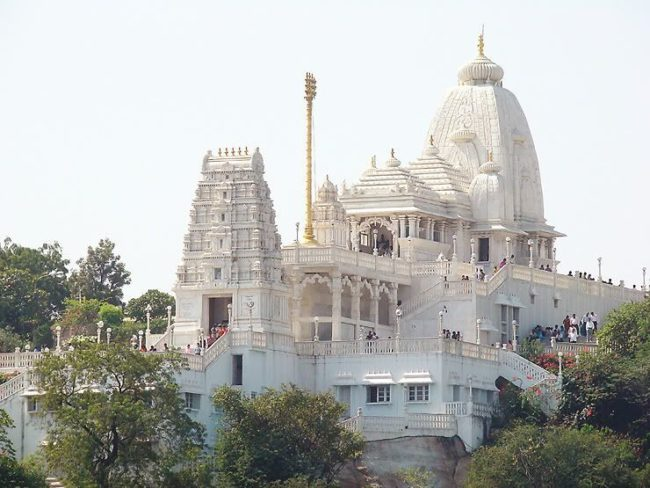

Things to do (Golconda Fort)
Shopping-
GVK One Mall:
GVK One Mall in Banjara Hills is where you need to head to shop, eat & enjoy activities. You can shop from brands like Chumbak, Armani, watch movies at Inox, and eat at Hard Rock Cafe.
🔗 Click here to know moreInorbit Mall:
The Inorbit Mall have universal class and appeal and seek to provide a one-stop destination for fashion, lifestyle, food, and entertainment leading to an international experience. Inorbit Malls have won more than 65+ awards since inception including India's Most Trusted Mall by Brand Trust Report 2014.
🔗 Click here to know more

Sightseeing -
Birla Mandir:
Birla Mandir in Hyderabad is dedicated to Lord Venkateshwara of Tirumala Tirupati Temple. It is said that a whopping quantity of white marble, which is almost 2000 tonnes, was brought from Rajasthan for building this temple. Located on the top of a hill of 280 feet, also known as Naubat Pahad, Birla Temple stands magnificently, drawing admiring glances from every passerby. Birla mandir is one of the Top 10 tourist places to visit in Hyderabad. There are various Birla Mandirs which have been built all over the country. These have been constructed by the industrialists Birlas and are thus popularly known by the family that undertook the task.
🔗 Click here to know moreCharminar:
Beating in the heart of the city, Charminar is a precious gem of Hyderabad city, and pride of the country India. It is a heritage left by the Qutb Shahi Dynasty to mark the brilliance of its sultanate. The oldest mosque constructed in the ‘City of Nizams’ is also established in this massive example of Indo Islamic architecture Charminar, which itself means four minarets and justifies the construction of the monument.
🔗 Click here to know more
.
Explore Golconda Fort!

Places to eat
|

About Golconda Fort |

Best time to visit Golconda Fort |

History |
How to reach Golconda Fort |